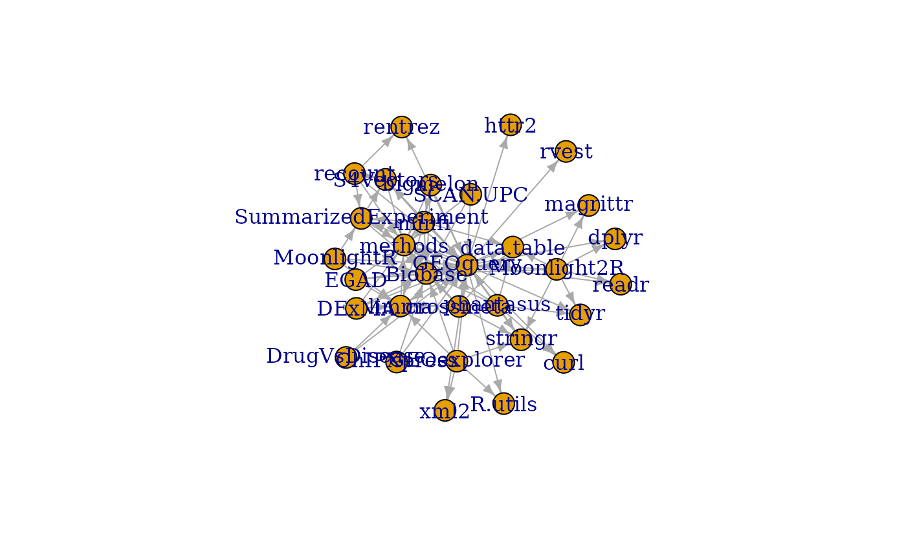

While the inducedSubgraphByPkgs
returns the subgraph with the minimal connections
between named packages, this function takes a vector of
package names, a degree (1 or more) and returns the
subgraph(s) that are within degree of the
package named.
subgraphByDegree(g, pkg, degree = 1, ...)an igraph graph, typically created by
buildPkgDependencyIgraph
character(1) package name from which to measure degree.
integer(1) degree, limit search for adjacent vertices to this degree.
passed on to distances
An igraph graph, with only nodes and their edges within degree of the named package
g = buildPkgDependencyIgraph(buildPkgDependencyDataFrame())
#> 'getOption("repos")' replaces Bioconductor standard repositories, see
#> 'help("repositories", package = "BiocManager")' for details.
#> Replacement repositories:
#> CRAN: https://cran.rstudio.com
g2 = subgraphByDegree(g, 'GEOquery')
plot(g2)
